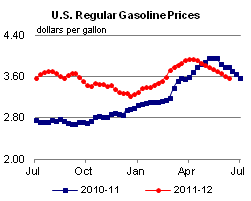
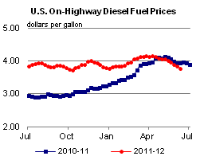
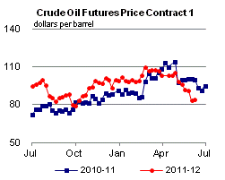
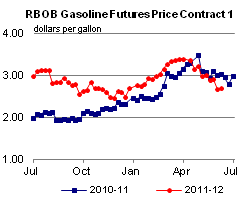
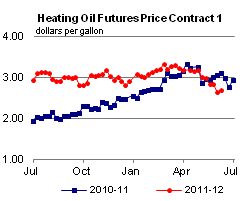
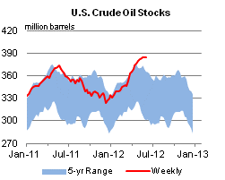
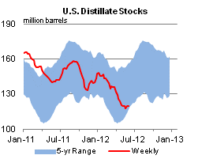
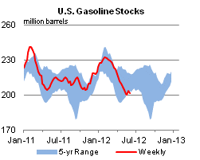
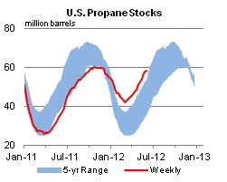

Released: June 13, 2012
Next Release: June 20, 2012
EIA lowers its crude oil price forecast in the June STEO
Yesterday, the U.S. Energy Information Administration (EIA) issued its June Short-Term Energy Outlook (STEO) , which included significant downward revisions to the crude oil and petroleum product price forecasts for the second half of 2012 (Figure 1). The changes come after a combination of concerns regarding economic growth and moderating supply-demand balance expectations contributed to a steep drop in global crude oil prices in May. As a result, EIA is now forecasting West Texas Intermediate (WTI) crude oil spot prices to average about $95 per barrel for the rest of 2012. Similarly, the average crude oil refiner acquisition cost (RAC) is now expected to be about $11 per barrel lower in the second half of 2012 compared with the May STEO. The lower forecast for crude oil prices has translated into a lower forecast for product prices. Regular gasoline is now expected to average $3.51 per gallon nationally in the third quarter, down from the $3.76 per gallon forecast in May.
{kind=link}
Oil prices retreated markedly in May following a series of downbeat economic headlines, and there are concerns more declines could occur if recent signs of economic slowdown in China and the United States were to be confirmed and if a solution to current euro zone debt issues is not promptly agreed upon. After reaching a year-to-date peak of $109 per barrel in late February, WTI traded sideways for much of March and April, then lurched downward in May and early June, settling at $85 per barrel on June 7, lowering the starting point for EIA's 2012 second-half WTI forecast. EIA's forecast for global economic growth in the June STEO is largely unchanged since the prior STEO despite recently intensified concerns about the health of the global economy, but downward revisions are possible in future forecasts if economic conditions continue to worsen. Lower economic growth in the United States and China, the world's top two oil-consuming nations, would likely put downward pressure on global oil demand and prices.
The lower forecast for crude oil prices reflects comparatively looser market balances for the second half of the year. EIA expects liquid fuels supply from countries outside of the Organization of the Petroleum Exporting Countries (OPEC) to average 52.9 million barrels per day (bbl/d) for the third and fourth quarters of 2012, 0.2 million bbl/d higher than in the May STEO. Much of this upward revision is the result of raised expectations for U.S. crude oil production in the second half of the year, as production from tight oil formations continues at a very robust pace. At the same time, the forecast for global liquid fuels consumption is basically unchanged from the May STEO.
Notwithstanding EIA's expectation of more relaxed balances for the second half of 2012 compared to the May STEO, EIA is still forecasting a seasonal tightening of balances between the second and third quarters. Tighter balances are mostly attributed to the uptick in quarter-over-quarter liquid fuels consumption, which globally is expected to increase 1.8 million bbl/d, similar to the seasonal increase in consumption observed over the past two years. Meanwhile, EIA forecasts global supply of liquid fuels during the quarter will be about 0.1 million bbl/d lower as OPEC countries reduce crude oil production from the second quarter level, which was the highest since the third quarter of 2008. EIA expects this to be accompanied by an increase in prices relative to their current level.
There are several key developments in June that participants will be watching closely for clues on the direction of the market, including, but not limited to, a meeting of OPEC ministers set for June 14. Developments in the euro zone, including elections in Greece on June 17 and other economic and debt issues may also affect views regarding the pace of oil demand growth. The effects of the impending European Union embargo and other sanctions targeting exports of Iranian crude oil and their associated payments remain uncertain. Some industry analysts believe optimism about recent negotiations between Iran and its counterparts in the West has helped to ease prices in recent months, even though the outcome remains uncertain. Talks in Moscow regarding Iran's nuclear program are scheduled for June 18-19.
A look at the WTI futures and options market illustrates the market's perception of price uncertainty. WTI futures for September 2012 delivery during the 5-day period ending June 7, 2012 averaged $88 per barrel. Implied volatility increased from 21.6 percent on May 1 to 33.3 percent on June 7, establishing new lower and upper limits of the 95-percent confidence interval for the market's expectations of monthly average WTI prices in September 2012 at $66 per barrel and $118 per barrel, respectively.
Gasoline falls for the 10th week, diesel decreases for the 9th week
The U.S. average retail price of regular gasoline decreased 4 cents this week to $3.57 per gallon, 14 cents per gallon lower than last year at this time. The average price has shed almost 37 cents over the last ten weeks, to its lowest level since mid-February. Prices fell in all regions except the Midwest, where the average price rose two cents to $3.54 per gallon. The largest decline came on the West Coast, where the price decreased nine cents to $4.09 per gallon. Prices on the East Coast and Gulf Coast were each down about six cents, to $3.45 per gallon and $3.31 per gallon, respectively. The Rocky Mountain region saw the smallest decrease, falling two cents to $3.71 per gallon.
The national average diesel fuel price decreased 7 cents to $3.78 per gallon, 17 cents per gallon lower than last year at this time, and the lowest average since October 2011. The West Coast saw the regional largest decrease for the third consecutive week, falling eleven cents to $3.99 per gallon. The last time diesel on the West coast was below the $4 mark was January 2, 2012. The East Coast price dropped almost seven cents to $3.82 per gallon, and the Gulf Coast price lost almost six cents to reach $3.70 per gallon. Average prices in both the Midwest and Rocky Mountains fell five cents, to $3.70 per gallon and $3.87 per gallon, respectively.
Propane stocks show a small build
Compared to recent weeks, propane inventories showed a smaller than usual build last week, adding 0.3 million barrels to end at 58.2 million barrels, 23 million barrels (63 percent) higher than a year ago. The Midwest region added 0.4 million barrels, and Rocky Mountain/West Coast stocks grew by 0.2 million barrels. Gulf Coast inventories declined by 0.2 million barrels, and East Coast stocks dropped by 0.1 million barrels. Propylene non-fuel-use inventories represented 6.3 percent of total propane inventories.
Text from the previous editions of This Week In Petroleum is accessible through a link at the top right-hand corner of this page.
|  |  | ||||||
| Retail Data | Change From Last | Retail Data | Change From Last | ||||
| 06/11/12 | Week | Year | 06/11/12 | Week | Year | ||
| Gasoline | 3.572 | Diesel Fuel | 3.781 | ||||
|  |  | ||||||||||||||||||||||||||
|
 | ||||||||||||||||||||||||||
| *Note: Crude Oil Price in Dollars per Barrel. | |||||||||||||||||||||||||||
|  |  | ||||||
|  |  | ||||||
| Stocks Data | Change From Last | Stocks Data | Change From Last | ||||
| 06/08/12 | Week | Year | 06/08/12 | Week | Year | ||
| Crude Oil | 384.4 | Distillate | 120.0 | ||||
| Gasoline | 201.8 | Propane | 58.241 | ||||